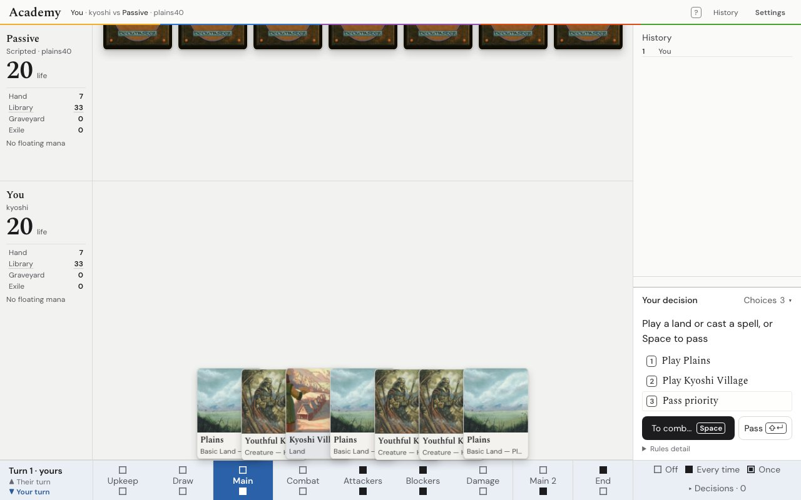
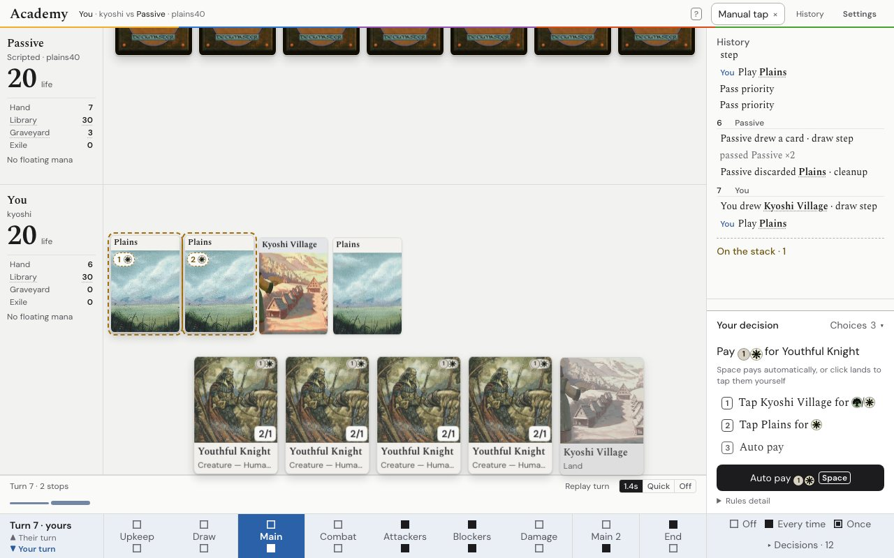
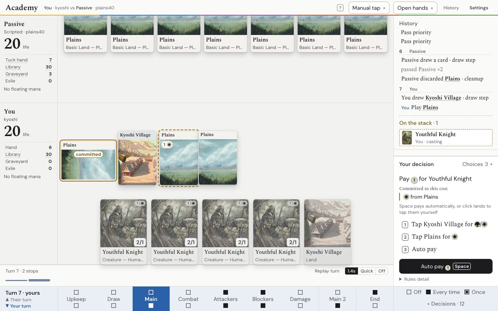
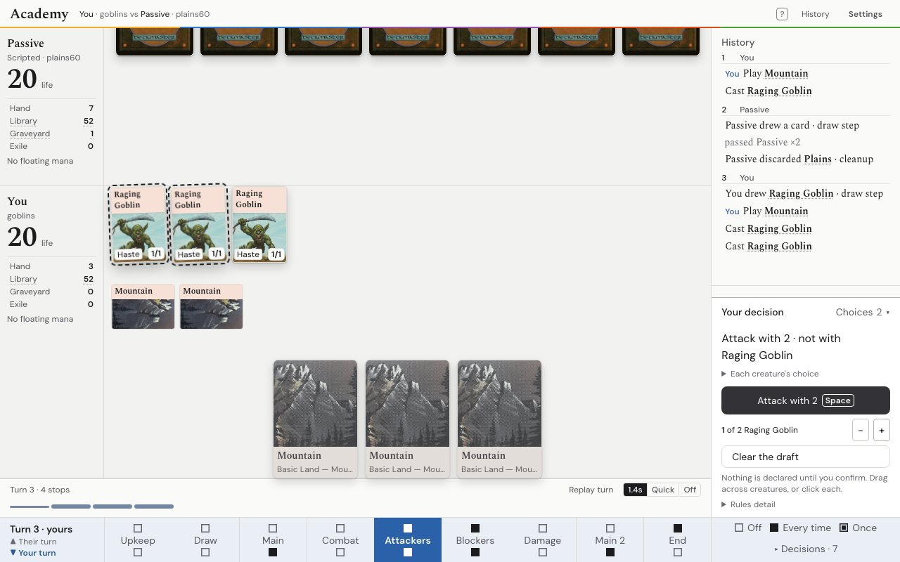
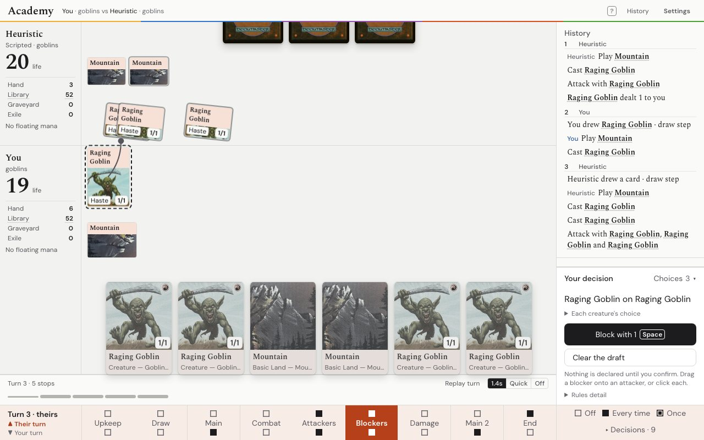
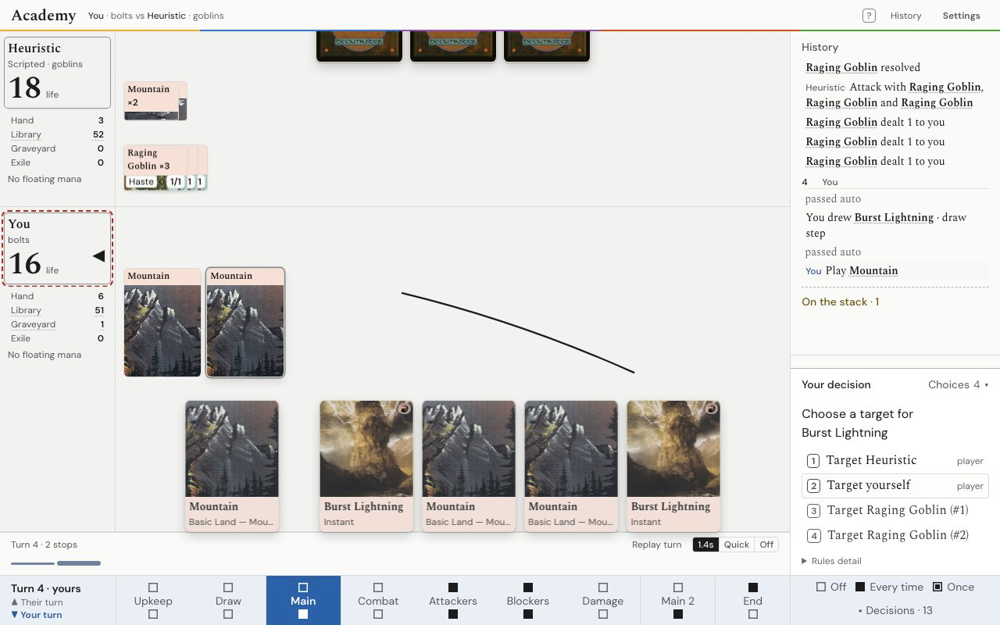
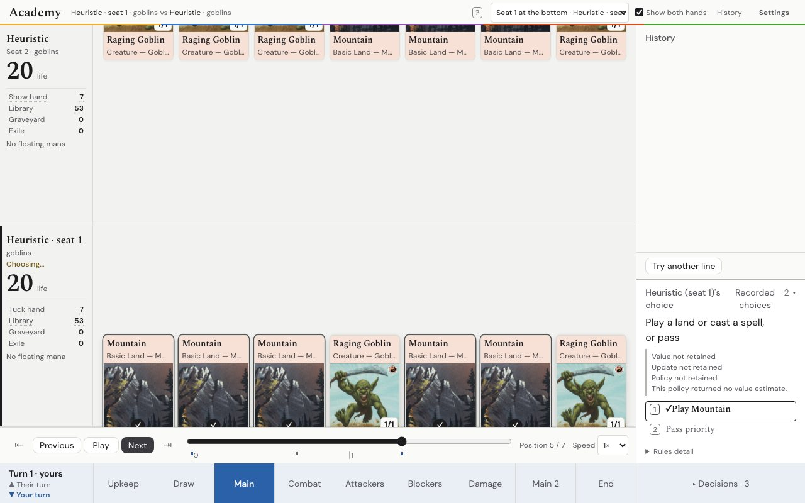
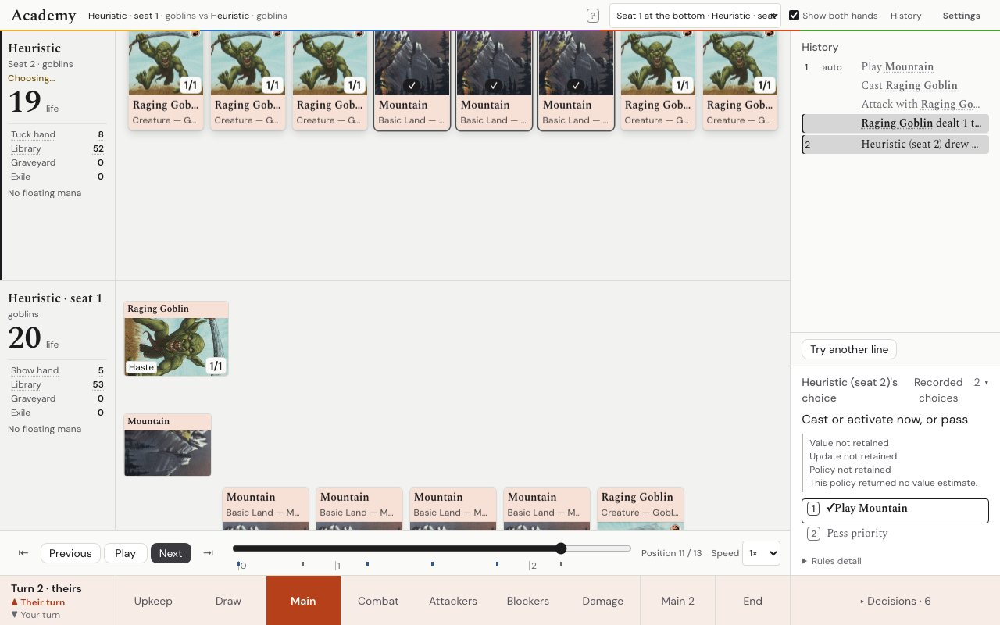

MTG-487 QA — Fix-Forward Verification
Fix-forward pass at 67abc1a6e7 (post-merge 65dcf2340a over 080ea64372 “Steady Watch seats, hand ribbons, and open hands in Play”, plus ebb3032688 fixing view.you.hand). The static SPA was rebuilt with ACADEMY_STATIC_BUILD=1 and driven through real configured launches (managym academy play and managym academy watch) in headless Chromium at 1280×800, followed by the deferred Academy UI Playwright specs. Zero browser console errors, page errors, or failed requests occurred across all six live runs; no code fixes were needed.
| Scenario | Result |
|---|---|
| Play: Turn 1 folded hand ribbon — 3 Plains in one offer; drag alias #19 onto battlefield | works |
| Play: 5 Youthful Knights folded into one cast; click alias #27 | works |
| Play: Manual payment (Kyoshi Village + 3 Plains at {1}{W}); hover & click alias #85, toggle Open hands, reload, click alias #85 | 3 offers; Knight resolves |
| Play: Short board (1280×800 with Decisions open and Open hands active) | no plate overflow |
| Combat: Attack draft clicking 2 non-first Raging Goblins (#127, #124 of #129/#127/#124) | 1 decision_group_command |
| Combat: Block draft dragging blocker #127 onto alias attacker #130 (canonical #132) | canonical block accepted |
| Targets: Burst Lightning clicked on alias Raging Goblin #131 (canonical #128) | canonical #128 dies; #131 survives |
| Cleanup discard: 8 identical Plains on turn 2 | no prompt; graveyard gains 1 |
| Watch: Steady seats (Seat 1 bottom, Seat 2 top) with folded hand offers on both ribbons | both ribbons show ✓ on all copies |
Deferred CI Playwright specs: mana-payment, decision-surface, watch, drag-play | 28 / 28 passed (21.9s) |
1 · Play: folded hand ribbon, drag alias, manual payment & Open hands works
14 Kyoshi Village / 10 Plains / 16 Youthful Knight against 40 Plains (passive, --order play, --seed 11) at 1280×800.
- Turn 1 hand ribbon: Choices showed 1
Play Plainsoffer (subject#16, aliases[#21, #19]) alongsidePlay Kyoshi VillageandPass priority. All three Plains in the bottom hand ribbon carried.legalwhile the opponent’s top ribbon showed 7 card backs. Dragging alias#19onto the battlefield showed thePlay Plainsdrop zone and sent canonicaloffer_id: 0. - Folded cast & manual payment: After disabling Auto-tap in Settings (header chip
Manual tap ×), five Youthful Knights in hand folded into oneCast Youthful Knight; clicking alias#27opened the manual payment stop with 3 rows (Tap Kyoshi Village for {G}/{W},Tap Plains for {W}subject#82with aliases[#84, #85], andAuto pay). - Alias hover/tap + Open hands + reload: Pointing at alias Plains
#85previewed tapping canonical#82(data-payment-source="1"). Clicking alias#85sentoffer_id: 1and tapped#82(committed). Enabling Open hands mid-payment slid out all 7 opponent Plains face-up along the top ribbon with zero plate overflow. Reloading mid-payment preserved both Open hands (data-out="true") and the remaining payment (canonical#84, alias#85); clicking alias#85finished paying and Youthful Knight resolved onto the battlefield. Opening the Decisions strip at 1280×800 kept both plates overflow-free (191/191and338/338).



2 · Combat drafts, folded targets & forced discard works
- Attack draft:
22 Mountain / 30 Raging Goblin / 8 Burst Lightningvs60 Plains(passive,--seed 5). Clicking the last two Raging Goblins (#127,#124of[#129, #127, #124]) showedAttack with 2 Spaceand pile counter1 of 2 Raging Goblin; confirming sent exactly 1decision_group_commandand 0 rawcommandmessages. - Block draft: Goblin mirror vs
heuristic(--order draw,--seed 5). Dragging blocker#127onto alias attacker#130(canonical#132) aligned the attacking pile to the front of the row, showedRaging Goblin on Raging Goblin, and confirmed in onedecision_group_command. - Folded target:
22 Mountain / 8 Raging Goblin / 30 Burst Lightningvs goblins (heuristic,--order draw,--seed 5). Clicking alias goblin#131(canonical#128, offer3) sentoffer_id: 3; canonical#128died and alias#131survived. - Cleanup discard:
60 Plainsvs60 Plains(passive,--seed 3). Passing every priority through turn 5 moved a Plains to the graveyard without opening a discard prompt.



3 · Watch steady seats & top/bottom hand ribbons works
managym academy watch --player heuristic --player heuristic on the goblin mirror (--seed 5) at 1280×800.
Steady seats maintained (top=seat 1, bottom=seat 0): true Seat 1 (bottom ribbon): 1 "Play Mountain" rail row, 5 Mountains in hand, topOut=false, botOut=true Seat 2 (top ribbon): 1 "Play Mountain" rail row, 3 Mountains in hand (#70, #74, #82), all 3 with ✓ pill, topOut=true, botOut=false Idle-seat plate toggle: bottom ribbon data-out flipped false → true; plate overflows=false


view.opponent.hand with ✓ on all three folded Mountains, and Seat 1’s hand tucks to name bars below.4 · Deferred CI Playwright browser specs 28 / 28 passed
Ran the Academy UI Playwright specs skipped in post-merge CI run 45961017088 against playwright.release.config.ts:
e2e/decision-surface.spec.ts 2 passed e2e/drag-play.spec.ts 18 passed e2e/mana-payment.spec.ts 4 passed e2e/watch.spec.ts 4 passed Total: 28 passed (21.9s)
What works, what wasn’t reached, and observations
- Works now: All folded-offer flows across Play (bottom hand ribbon click/drag, board piles, manual mana payments, Open hands mid-payment, reload recovery, short-board Decisions strip), combat drafts (attacks, blocks, targets, skipped identical discard), and steady-seat Watch (both bottom Seat 1 and top Seat 2 hand ribbons carrying folded alias marks) work cleanly at 1280×800, and all 28 targeted release Playwright browser specs pass.
- Not reached here: Full CI matrix jobs (
Protocol v1 Conformance,test:e2e:launch,test:e2e:policy,test:e2e:search, and the remaining non-MTG-487 release Playwright specs) are left to CI on the fix-forward PR. - Minor visual observation (out of scope for this fix-forward PR): In Scenario 2c (
s2-target-folded.jpg), two Raging Goblins cast on turn 3 share folded target offer #4 while the turn-1 goblin has separate offer #3 (differing in CR 302.6 summoning sickness under Haste). BecausepileKeyinacademy/ui/src/lib/board/view.tskeys onoffer.label("Target Raging Goblin") rather thanoffer.id, all three render in oneRaging Goblin ×3pile even though clicking the leftmost copy targets offer #3 and clicking the other two targets offer #4. A transient targeting line also flashed briefly in that screenshot before the stack card settled.